Chapter 7: Microbial Biochemistry¶
Introduction¶
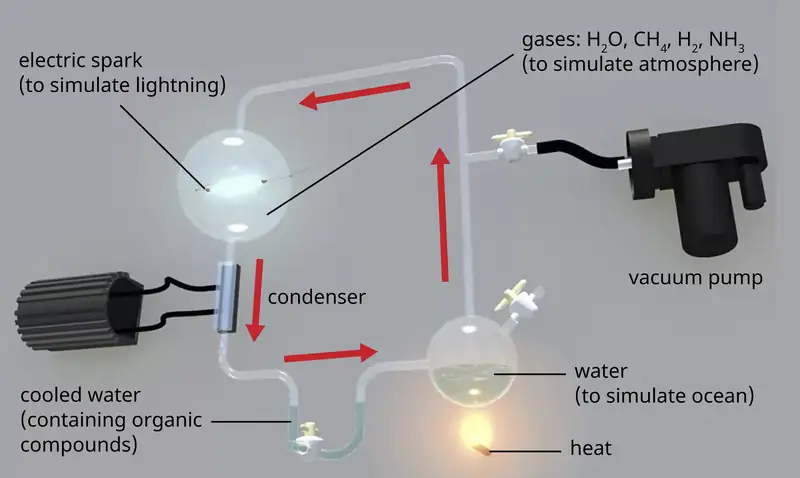
The earth is estimated to be 4.6 billion years old, but for the first 2 billion years, the atmosphere lacked oxygen, without which the earth could not support life as we know it. One hypothesis about how life emerged on earth involves the concept of a “primordial soup.” This idea proposes that life began in a body of water when metals and gases from the atmosphere combined with a source of energy, such as lightning or ultraviolet light, to form the carbon compounds that are the chemical building blocks of life. In 1952, Stanley Miller (1930–2007), a graduate student at the University of Chicago, and his professor Harold Urey (1893–1981), set out to confirm this hypothesis in a now-famous experiment. Miller and Urey combined what they believed to be the major components of the earth’s early atmosphere—water (H2O), methane (CH4), hydrogen (H2), and ammonia (NH3)—and sealed them in a sterile flask. Next, they heated the flask to produce water vapor and passed electric sparks through the mixture to mimic lightning in the atmosphere (Figure 7.1). When they analyzed the contents of the flask a week later, they found amino acids, the structural units of proteins—molecules essential to the function of all organisms.
7.1 Organic Molecules¶
Learning Objectives
By the end of this section, you will be able to:
- Identify common elements and structures found in organic molecules
- Explain the concept of isomerism
- Identify examples of functional groups
- Describe the role of functional groups in synthesizing polymers
Clinical Focus: Part 1
Penny is a 16-year-old student who visited her doctor, complaining about an itchy skin rash. She had a history of allergic episodes. The doctor looked at her sun-tanned skin and asked her if she switched to a different sunscreen. She said she had, so the doctor diagnosed an allergic eczema. The symptoms were mild so the doctor told Penny to avoid using the sunscreen that caused the reaction and prescribed an over-the-counter moisturizing cream to keep her skin hydrated and to help with itching.
- What kinds of substances would you expect to find in a moisturizing cream?
- What physical or chemical properties of these substances would help alleviate itching and inflammation of the skin?
Jump to the next Clinical Focus box.
Biochemistry is the discipline that studies the chemistry of life, and its objective is to explain form and function based on chemical principles. Organic chemistry is the discipline devoted to the study of carbon-based chemistry, which is the foundation for the study of biomolecules and the discipline of biochemistry. Both biochemistry and organic chemistry are based on the concepts of general chemistry, some of which are presented in Appendix A.
Elements in Living Cells¶
The most abundant element in cells is hydrogen (H), followed by carbon (C), oxygen (O), nitrogen (N), phosphorous (P), and sulfur (S). We call these elements macronutrients, and they account for about 99% of the dry weight of cells. Some elements, such as sodium (Na), potassium (K), magnesium (Mg), zinc (Zn), iron (Fe), calcium (Ca), molybdenum (Mo), copper (Cu), cobalt (Co), manganese (Mn), or vanadium (V), are required by some cells in very small amounts and are called micronutrients or trace elements. All of these elements are essential to the function of many biochemical reactions, and, therefore, are essential to life.
The four most abundant elements in living matter (C, N, O, and H) have low atomic numbers and are thus light elements capable of forming strong bonds with other atoms to produce molecules (Figure 7.2). Carbon forms four chemical bonds, whereas nitrogen forms three, oxygen forms two, and hydrogen forms one. When bonded together within molecules, oxygen, sulfur, and nitrogen often have one or more “lone pairs” of electrons that play important roles in determining many of the molecules’ physical and chemical properties (see Appendix A). These traits in combination permit the formation of a vast number of diverse molecular species necessary to form the structures and enable the functions of living organisms.
![Carbon dioxide (CO2) has a carbon atom in the center. This carbon atom is double bonded to an oxygen on the left and another oxygen on the right. Ammonia NH3 has a nitrogen attached to 3 hydrogen atoms. Oxygen (O2) has two oxygen atoCarbon dioxide (CO2) has a carbon atom in the center. This carbon atom is double bonded to an oxygen on the left and another oxygen on the right. Ammonia NH3 has a nitrogen attached to 3 hydrogen atoms. Oxygen (O2) has two oxygen atoms double bonded to each other.ms double bonded to each other.](img/osc-microbio-07-01-commonmol.webp)
Living organisms contain inorganic compounds (mainly water and salts; see Appendix A) and organic molecules. Organic molecules contain carbon; inorganic compounds do not. Carbon oxides and carbonates are exceptions; they contain carbon but are considered inorganic because they do not contain hydrogen. The atoms of an organic molecule are typically organized around chains of carbon atoms.
Inorganic compounds make up 1%–1.5% of the dry weight of living cells. They are small, simple compounds that play important roles in the cell, although they do not form cell structures. Most of the carbon found in organic molecules originates from inorganic carbon sources such as carbon dioxide captured via carbon fixation by microorganisms.
Check Your Understanding
- Describe the most abundant elements in nature.
- What are the differences between organic and inorganic molecules?
Organic Molecules and Isomerism¶
Organic molecules in organisms are generally larger and more complex than inorganic molecules. Their carbon skeletons are held together by covalent bonds. They form the cells of an organism and perform the chemical reactions that facilitate life. All of these molecules, called biomolecules because they are part of living matter, contain carbon, which is the building block of life. Carbon is a very unique element in that it has four valence electrons in its outer orbitals and can form four single covalent bonds with up to four other atoms at the same time (see Appendix A). These atoms are usually oxygen, hydrogen, nitrogen, sulfur, phosphorous, and carbon itself; the simplest organic compound is methane, in which carbon binds only to hydrogen (Figure 7.3).
As a result of carbon’s unique combination of size and bonding properties, carbon atoms can bind together in large numbers, thus producing a chain or carbon skeleton. The carbon skeleton of organic molecules can be straight, branched, or ring shaped (cyclic). Organic molecules are built on chains of carbon atoms of varying lengths; most are typically very long, which allows for a huge number and variety of compounds. No other element has the ability to form so many different molecules of so many different sizes and shapes.
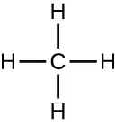
Molecules with the same atomic makeup but different structural arrangement of atoms are called isomers. The concept of isomerism is very important in chemistry because the structure of a molecule is always directly related to its function. Slight changes in the structural arrangements of atoms in a molecule may lead to very different properties. Chemists represent molecules by their structural formula, which is a graphic representation of the molecular structure, showing how the atoms are arranged. Compounds that have identical molecular formulas but differ in the bonding sequence of the atoms are called structural isomers. The monosaccharides glucose, galactose, and fructose all have the same molecular formula, C6H12O6, but we can see from Figure 7.4 that the atoms are bonded together differently.
![The chemical formula for glucose is 6 C's in the chain. The top C has a double bonded O. The next C has an OH on the right, the next C has an OH on the left, the next 3 Cs have OHs on the right, and the last 2 Cs have OHs on the right. The chemical formula for galactose is 6 Cs in a chain. The top C has a double bonded O. The next C has an OH on the right, the next 2 Cs have OHs on the left, and the last 2 Cs have OHs on the right. The chemical formula for fructose also has 6 Cs in a chain. The top C has an OH on the right. The next C has a double bonded O to the right. The next C has an OH to the left. The last 3 Cs have OHs to the right. All other bonds on these molecules are to Hs.](img/osc-microbio-07-01-isomers.webp)
Isomers that differ in the spatial arrangements of atoms are called stereoisomers; one unique type is enantiomers. The properties of enantiomers were originally discovered by Louis Pasteur in 1848 while using a microscope to analyze crystallized fermentation products of wine. Enantiomers are molecules that have the characteristic of chirality, in which their structures are nonsuperimposable mirror images of each other. Chirality is an important characteristic in many biologically important molecules, as illustrated by the examples of structural differences in the enantiomeric forms of the monosaccharide glucose or the amino acid alanine (Figure 7.5).
Many organisms are only able to use one enantiomeric form of certain types of molecules as nutrients and as building blocks to make structures within a cell. Some enantiomeric forms of amino acids have distinctly different tastes and smells when consumed as food. For example, L-aspartame, commonly called aspartame, tastes sweet, whereas D-aspartame is tasteless. Drug enantiomers can have very different pharmacologic affects. For example, the compound methorphan exists as two enantiomers, one of which acts as an antitussive (dextromethorphan, a cough suppressant), whereas the other acts as an analgesic (levomethorphan, a drug similar in effect to codeine).

Enantiomers are also called optical isomers because they can rotate the plane of polarized light. Some of the crystals Pasteur observed from wine fermentation rotated light clockwise whereas others rotated the light counterclockwise. Today, we denote enantiomers that rotate polarized light clockwise (+) as d forms, and the mirror image of the same molecule that rotates polarized light counterclockwise (−) as the l form. The d and l labels are derived from the Latin words dexter (on the right) and laevus (on the left), respectively. These two different optical isomers often have very different biological properties and activities. Certain species of molds, yeast, and bacteria, such as Rhizopus, Yarrowia, and Lactobacillus spp., respectively, can only metabolize one type of optical isomer; the opposite isomer is not suitable as a source of nutrients. Another important reason to be aware of optical isomers is the therapeutic use of these types of chemicals for drug treatment, because some microorganisms can only be affected by one specific optical isomer.
Check Your Understanding
- We say that life is carbon based. What makes carbon so suitable to be part of all the macromolecules of living organisms?
Biologically Significant Functional Groups¶
In addition to containing carbon atoms, biomolecules also contain functional groups—groups of atoms within molecules that are categorized by their specific chemical composition and the chemical reactions they perform, regardless of the molecule in which the group is found. Some of the most common functional groups are listed in Figure 7.6. In the formulas, the symbol R stands for “residue” and represents the remainder of the molecule. R might symbolize just a single hydrogen atom or it may represent a group of many atoms. Notice that some functional groups are relatively simple, consisting of just one or two atoms, while some comprise two of these simpler functional groups. For example, a carbonyl group is a functional group composed of a carbon atom double bonded to an oxygen atom: C=O. It is present in several classes of organic compounds as part of larger functional groups such as ketones, aldehydes, carboxylic acids, and amides. In ketones, the carbonyl is present as an internal group, whereas in aldehydes it is a terminal group.
![Table titled: Common functional groups found in biomolecules; 3 columns, name, functional group and class of compound. Aldehyde has a red C double bonded O and an H; the C is also bound to a black R. This is found in carbohydrates. Amine has a red C double bonded to an O and single bonded to an NH. The C and the N are each also bound to a black R. This is found in proteins. Amino has a red NH2 bound to a black R. This is found in amino acids and proteins. Phosphate has a red PO3H2; the P is also bound to a black R. This is found in nucleic acids, phospholipids and ATP. Carbonyl has a red C double bonded to an O; the C is also bound to 2 black Rs. This is found in ketones, aldehydes, carboxylic acids, amides. Carboxylic acid has a red C double bonded to an O and to an OH; the C is also bound to a black R. This is found in amino acids, proteins, and fatty acids. Ester has a red C double bonded to an O and single bonded to another O. The C is bound to a black R and the single bonded O is also bound to a black R. This is found in lipids and nucleic acids. Ether has a red O bound to 2 black Rs. This is found in disaccharides, polysaccharides, and lipids. Hydroxyl has a red OH bound to a black R; this is found in alcohols, monosaccharides, amino acids, and nucleic acids. Ketone has a red C double bonded to an O; the C is also bound to 2 black Rs. This is found in carbohydrates. Methyl has a red CH3 bound to a black R. This is found in methylated compounds such as methyl alcohols and methyl esters. Sulfhydryl has a black R bound to a red SH.. This is found in amino acids and proteins](img/osc-microbio-07-01-tblcomfun.webp)
Macromolecules¶
Carbon chains form the skeletons of most organic molecules. Functional groups combine with the chain to form biomolecules. Because these biomolecules are typically large, we call them macromolecules. Many biologically relevant macromolecules are formed by linking together a great number of identical, or very similar, smaller organic molecules. The smaller molecules act as building blocks and are called monomers, and the macromolecules that result from their linkage are called polymers. Cells and cell structures include four main groups of carbon-containing macromolecules: polysaccharides, proteins, lipids, and nucleic acids. The first three groups of molecules will be studied throughout this chapter. The biochemistry of nucleic acids will be discussed in Biochemistry of the Genome.
Of the many possible ways that monomers may be combined to yield polymers, one common approach encountered in the formation of biological macromolecules is dehydration synthesis. In this chemical reaction, monomer molecules bind end to end in a process that results in the formation of water molecules as a byproduct:
Figure 7.7 shows dehydration synthesis of glucose binding together to form maltose and a water molecule. Table 7.1 summarizes macromolecules and some of their functions.
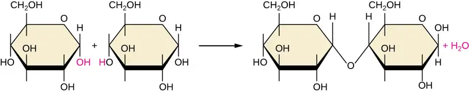
Table 7.1
| Some Functions of Macromolecules | |
|---|---|
| Macromolecule | Functions |
| Carbohydrates | Energy storage, receptors, food, structural role in plants, fungal cell walls, exoskeletons of insects |
| Lipids | Energy storage, membrane structure, insulation, hormones, pigments |
| Nucleic acids | Storage and transfer of genetic information |
| Proteins | Enzymes, structure, receptors, transport, structural role in the cytoskeleton of a cell and the extracellular matrix |
Check Your Understanding
- What is the byproduct of a dehydration synthesis reaction?
7.2 Carbohydrates¶
Learning Objectives
By the end of this section, you will be able to:
- Give examples of monosaccharides and polysaccharides
- Describe the function of monosaccharides and polysaccharides within a cell
The most abundant biomolecules on earth are carbohydrates. From a chemical viewpoint, carbohydrates are primarily a combination of carbon and water, and many of them have the empirical formula (CH2O)n, where n is the number of repeated units. This view represents these molecules simply as “hydrated” carbon atom chains in which water molecules attach to each carbon atom, leading to the term “carbohydrates.” Although all carbohydrates contain carbon, hydrogen, and oxygen, there are some that also contain nitrogen, phosphorus, and/or sulfur. Carbohydrates have myriad different functions. They are abundant in terrestrial ecosystems, many forms of which we use as food sources. These molecules are also vital parts of macromolecular structures that store and transmit genetic information (i.e., DNA and RNA). They are the basis of biological polymers that impart strength to various structural components of organisms (e.g., cellulose and chitin), and they are the primary source of energy storage in the form of starch and glycogen.
Monosaccharides: The Sweet Ones¶
In biochemistry, carbohydrates are often called saccharides, from the Greek sakcharon, meaning sugar, although not all the saccharides are sweet. The simplest carbohydrates are called monosaccharides, or simple sugars. They are the building blocks (monomers) for the synthesis of polymers or complex carbohydrates, as will be discussed further in this section. Monosaccharides are classified based on the number of carbons in the molecule. General categories are identified using a prefix that indicates the number of carbons and the suffix –ose, which indicates a saccharide; for example, triose (three carbons), tetrose (four carbons), pentose (five carbons), and hexose (six carbons) (Figure 7.8). The hexose D-glucose is the most abundant monosaccharide in nature. Other very common and abundant hexose monosaccharides are galactose, used to make the disaccharide milk sugar lactose, and the fruit sugar fructose.
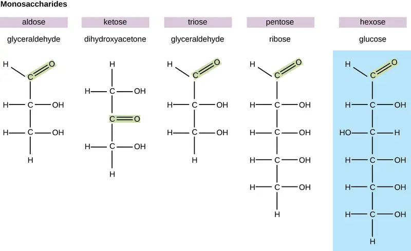
Monosaccharides of four or more carbon atoms are typically more stable when they adopt cyclic, or ring, structures. These ring structures result from a chemical reaction between functional groups on opposite ends of the sugar’s flexible carbon chain, namely the carbonyl group and a relatively distant hydroxyl group. Glucose, for example, forms a six-membered ring (Figure 7.9).
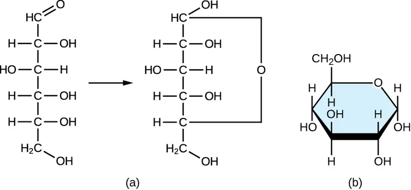
Check Your Understanding
- Why do monosaccharides form ring structures?
Disaccharides¶
Two monosaccharide molecules may chemically bond to form a disaccharide. The name given to the covalent bond between the two monosaccharides is a glycosidic bond. Glycosidic bonds form between hydroxyl groups of the two saccharide molecules, an example of the dehydration synthesis described in the previous section of this chapter:
Common disaccharides are the grain sugar maltose, made of two glucose molecules; the milk sugar lactose, made of a galactose and a glucose molecule; and the table sugar sucrose, made of a glucose and a fructose molecule (Figure 7.10).
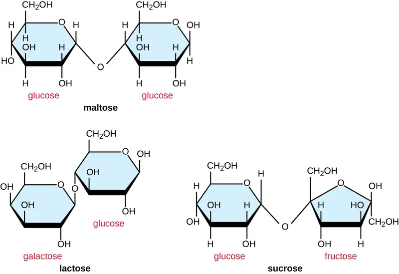
Polysaccharides¶
Polysaccharides, also called glycans, are large polymers composed of hundreds of monosaccharide monomers. Unlike mono- and disaccharides, polysaccharides are not sweet and, in general, they are not soluble in water. Like disaccharides, the monomeric units of polysaccharides are linked together by glycosidic bonds.
Polysaccharides are very diverse in their structure. Three of the most biologically important polysaccharides—starch, glycogen, and cellulose—are all composed of repetitive glucose units, although they differ in their structure (Figure 7.11). Cellulose consists of a linear chain of glucose molecules and is a common structural component of cell walls in plants and other organisms. Glycogen and starch are branched polymers; glycogen is the primary energy-storage molecule in animals and bacteria, whereas plants primarily store energy in starch. The orientation of the glycosidic linkages in these three polymers is different as well and, as a consequence, linear and branched macromolecules have different properties.
Modified glucose molecules can be fundamental components of other structural polysaccharides. Examples of these types of structural polysaccharides are N-acetyl glucosamine (NAG) and N-acetyl muramic acid (NAM) found in bacterial cell wall peptidoglycan. Polymers of NAG form chitin, which is found in fungal cell walls and in the exoskeleton of insects.
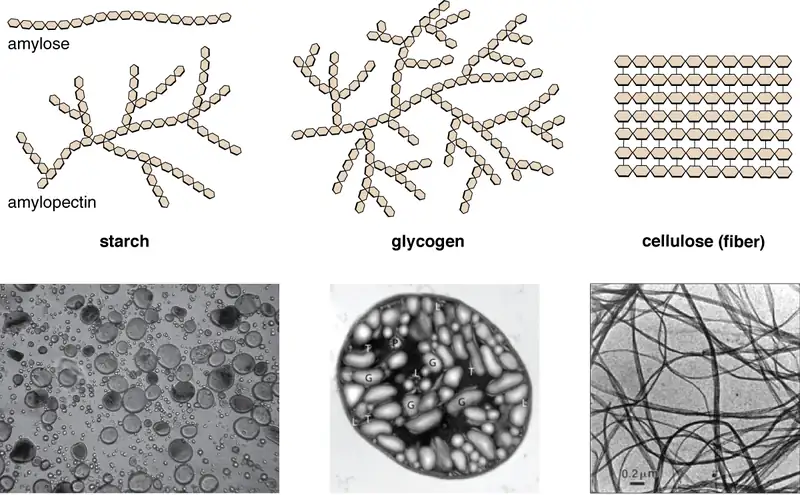
Check Your Understanding
- What are the most biologically important polysaccharides and why are they important?
7.3 Lipids¶
Learning Objectives
By the end of this section, you will be able to:
- Describe the chemical composition of lipids
- Describe the unique characteristics and diverse structures of lipids
- Compare and contrast triacylglycerides (triglycerides) and phospholipids.
- Describe how phospholipids are used to construct biological membranes.
Although they are composed primarily of carbon and hydrogen, lipid molecules may also contain oxygen, nitrogen, sulfur, and phosphorous. Lipids serve numerous and diverse purposes in the structure and functions of organisms. They can be a source of nutrients, a storage form for carbon, energy-storage molecules, or structural components of membranes and hormones. Lipids comprise a broad class of many chemically distinct compounds, the most common of which are discussed in this section.
Fatty Acids and Triacylglycerides¶
The fatty acids are lipids that contain long-chain hydrocarbons terminated with a carboxylic acid functional group. Because of the long hydrocarbon chain, fatty acids are hydrophobic (“water fearing”) or nonpolar. Fatty acids with hydrocarbon chains that contain only single bonds are called saturated fatty acids because they have the greatest number of hydrogen atoms possible and are, therefore, “saturated” with hydrogen. Fatty acids with hydrocarbon chains containing at least one double bond are called unsaturated fatty acids because they have fewer hydrogen atoms. Saturated fatty acids have a straight, flexible carbon backbone, whereas unsaturated fatty acids have “kinks” in their carbon skeleton because each double bond causes a rigid bend of the carbon skeleton. These differences in saturated versus unsaturated fatty acid structure result in different properties for the corresponding lipids in which the fatty acids are incorporated. For example, lipids containing saturated fatty acids are solids at room temperature, whereas lipids containing unsaturated fatty acids are liquids.
A triacylglycerol, or triglyceride, is formed when three fatty acids are chemically linked to a glycerol molecule (Figure 7.12). Triglycerides are the primary components of adipose tissue (body fat), and are major constituents of sebum (skin oils). They play an important metabolic role, serving as efficient energy-storage molecules that can provide more than double the caloric content of both carbohydrates and proteins.
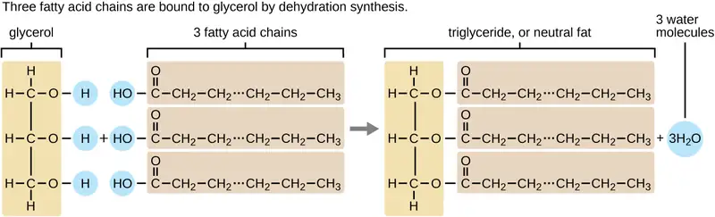
Check Your Understanding
- Explain why fatty acids with hydrocarbon chains that contain only single bonds are called saturated fatty acids.
Phospholipids and Biological Membranes¶
Triglycerides are classified as simple lipids because they are formed from just two types of compounds: glycerol and fatty acids. In contrast, complex lipids contain at least one additional component, for example, a phosphate group (phospholipids) or a carbohydrate moiety (glycolipids). Figure 7.13 depicts a typical phospholipid composed of two fatty acids linked to glycerol (a diglyceride). The two fatty acid carbon chains may be both saturated, both unsaturated, or one of each. Instead of another fatty acid molecule (as for triglycerides), the third binding position on the glycerol molecule is occupied by a modified phosphate group.
![A drawing of a phospholipid as a large circle with 2 rectangles projecting from the bottom. The circle is labeled hydrophilic head and contains glycerol (which contains 3 carbons). Attached ot one of these carbons is a phosphate (which is a phosphorus attached to 4 oxygen atoms). The rectangles at the bottom are both long carbon chains labeled as hydrophobic tails. One of the chains is a straight zig-zag line and is labeled saturated fatty acid. The other has a double bond that creates a bend in the line; this is labeled unsaturated fatty acid.](img/osc-microbio-07-03-phospholip.webp)
The molecular structure of lipids results in unique behavior in aqueous environments. Figure 7.12 depicts the structure of a triglyceride. Because all three substituents on the glycerol backbone are long hydrocarbon chains, these compounds are nonpolar and not significantly attracted to polar water molecules—they are hydrophobic. Conversely, phospholipids such as the one shown in Figure 7.13 have a negatively charged phosphate group. Because the phosphate is charged, it is capable of strong attraction to water molecules and thus is hydrophilic, or “water loving.” The hydrophilic portion of the phospholipid is often referred to as a polar “head,” and the long hydrocarbon chains as nonpolar “tails.” A molecule presenting a hydrophobic portion and a hydrophilic moiety is said to be amphipathic. Notice the “R” designation within the hydrophilic head depicted in Figure 7.13, indicating that a polar head group can be more complex than a simple phosphate moiety. Glycolipids are examples in which carbohydrates are bonded to the lipids’ head groups.
The amphipathic nature of phospholipids enables them to form uniquely functional structures in aqueous environments. As mentioned, the polar heads of these molecules are strongly attracted to water molecules, and the nonpolar tails are not. Because of their considerable lengths, these tails are, in fact, strongly attracted to one another. As a result, energetically stable, large-scale assemblies of phospholipid molecules are formed in which the hydrophobic tails congregate within enclosed regions, shielded from contact with water by the polar heads (Figure 7.14). The simplest of these structures are micelles, spherical assemblies containing a hydrophobic interior of phospholipid tails and an outer surface of polar head groups. Larger and more complex structures are created from lipid-bilayer sheets, or unit membranes, which are large, two-dimensional assemblies of phospholipids congregated tail to tail. The cell membranes of nearly all organisms are made from lipid-bilayer sheets, as are the membranes of many intracellular components. These sheets may also form lipid-bilayer spheres that are the structural basis of vesicles and liposomes, subcellular components that play a role in numerous physiological functions.
![A lipid bilayer sheet is when there are 2 rows of phospholipids across each other forming a flat surface. The polar heads of all phospholipids are towards the outside of the sheet, and the nonpolar tails are towards the inside. This lipid-bilyaer can also form a sphere. The lipid-bilayer forms the surface of the sphere; the polar heads are on the outside of the sphere and lining the inside space of the sphere. Lipids can also form a single-layer sphere where the outside of the sphere is the polar heads and the nonpolar tails fill the center of the sphere.](img/osc-microbio-07-03-micelle.webp)
Check Your Understanding
- How is the amphipathic nature of phospholipids significant?
Isoprenoids and Sterols¶
The isoprenoids are branched lipids, also referred to as terpenoids, that are formed by chemical modifications of the isoprene molecule (Figure 7.15). These lipids play a wide variety of physiological roles in plants and animals, with many technological uses as pharmaceuticals (capsaicin), pigments (e.g., orange beta carotene, xanthophylls), and fragrances (e.g., menthol, camphor, limonene [lemon fragrance], and pinene [pine fragrance]). Long-chain isoprenoids are also found in hydrophobic oils and waxes. Waxes are typically water resistant and hard at room temperature, but they soften when heated and liquefy if warmed adequately. In humans, the main wax production occurs within the sebaceous glands of hair follicles in the skin, resulting in a secreted material called sebum, which consists mainly of triacylglycerol, wax esters, and the hydrocarbon squalene. There are many bacteria in the microbiota on the skin that feed on these lipids. One of the most prominent bacteria that feed on lipids is Cutibacterium acnes, which uses the skin’s lipids to generate short-chain fatty acids and is involved in the production of acne.
![Alpha-pinene is a carbon ring with added carbon projections. Camphor is a carbon ring with added carbon projections and a double bonded oxygen on one carbon. Isophrene is a 4 carbon chain with another carbon attached to carbon 2. Limonene is a carbon ring with a carbon attached to on one end and another carbon attached to the other end; this carbon has 2 carbons attached to it. Menthol i s a carbon ring with a carbon attached to on one end and another carbon attached to the other end; this carbon has 2 carbons attached to it. One more carbon corner has an OH group. Beta-carotene is two carbon rings attached by a long carbon chain.](img/osc-microbio-07-03-isoprene.webp)
Another type of lipids are steroids, complex, ringed structures that are found in cell membranes; some function as hormones. The most common types of steroids are sterols, which are steroids containing an OH group. These are mainly hydrophobic molecules, but also have hydrophilic hydroxyl groups. The most common sterol found in animal tissues is cholesterol. Its structure consists of four rings with a double bond in one of the rings, and a hydroxyl group at the sterol-defining position. The function of cholesterol is to strengthen cell membranes in eukaryotes and in bacteria without cell walls, such as Mycoplasma. Prokaryotes generally do not produce cholesterol, although bacteria produce similar compounds called hopanoids, which are also multiringed structures that strengthen bacterial membranes (Figure 7.16). Fungi and some protozoa produce a similar compound called ergosterol, which strengthens the cell membranes of these organisms.
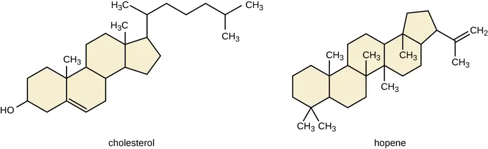
Link to Learning: Liposomes
This video provides additional information about phospholipids and liposomes.
Check Your Understanding
- How are isoprenoids used in technology?
Clinical Focus: Part 2
The moisturizing cream prescribed by Penny’s doctor was a topical corticosteroid cream containing hydrocortisone. Hydrocortisone is a synthetic form of cortisol, a corticosteroid hormone produced in the adrenal glands, from cholesterol. When applied directly to the skin, it can reduce inflammation and temporarily relieve minor skin irritations, itching, and rashes by reducing the secretion of histamine, a compound produced by cells of the immune system in response to the presence of pathogens or other foreign substances. Because histamine triggers the body’s inflammatory response, the ability of hydrocortisone to reduce the local production of histamine in the skin effectively suppresses the immune system and helps limit inflammation and accompanying symptoms such as pruritus (itching) and rashes.
- Does the corticosteroid cream treat the cause of Penny’s rash, or just the symptoms?
Jump to the next Clinical Focus box. Go back to the previous Clinical Focus box.
7.4 Proteins¶
Learning Objectives
By the end of this section, you will be able to:
- Describe the fundamental structure of an amino acid
- Describe the chemical structures of proteins
- Summarize the unique characteristics of proteins
At the beginning of this chapter, a famous experiment was described in which scientists synthesized amino acids under conditions simulating those present on earth long before the evolution of life as we know it. These compounds are capable of bonding together in essentially any number, yielding molecules of essentially any size that possess a wide array of physical and chemical properties and perform numerous functions vital to all organisms. The molecules derived from amino acids can function as structural components of cells and subcellular entities, as sources of nutrients, as atom- and energy-storage reservoirs, and as functional species such as hormones, enzymes, receptors, and transport molecules.
Amino Acids and Peptide Bonds¶
An amino acid is an organic molecule in which a hydrogen atom, a carboxyl group (–COOH), and an amino group (–NH2) are all bonded to the same carbon atom, the so-called α carbon. The fourth group bonded to the α carbon varies among the different amino acids and is called a residue or a side chain, represented in structural formulas by the letter R. A residue is a monomer that results when two or more amino acids combine and remove water molecules. The primary structure of a protein, a peptide chain, is made of amino acid residues. The unique characteristics of the functional groups and R groups allow these components of the amino acids to form hydrogen, ionic, and disulfide bonds, along with polar/nonpolar interactions needed to form secondary, tertiary, and quaternary protein structures. These groups are composed primarily of carbon, hydrogen, oxygen, nitrogen, and sulfur, in the form of hydrocarbons, acids, amides, alcohols, and amines. A few examples illustrating these possibilities are provided in Figure 7.17.
![A table titled some amino acids and their structures; 3 columns: amino acid, R group, structure. Alanine has an R group of CH3. Its structure is a C attached to a COO-, an H, a NH3, and a CH3. Serine has an R group of CH2OH. Its structure is a C attached to a COO-, an H, a NH3, and a CH2OH. Lysine has an R group of (CH2)4NH3+. Its structure is a C attached to a COO-, an H, a NH3, and a (CH2)4NH3+. Aspartate has an R group of CH2COO. Its structure is a C attached to a COO-, an H, a NH3, and a CH2COO. Cysteine has an R group of CH2SH. Its structure is a C attached to a COO-, an H, a NH3, and a CH2SH.](img/osc-microbio-07-04-aminoacids.webp)
Amino acids may chemically bond together by reaction of the carboxylic acid group of one molecule with the amine group of another. This reaction forms a peptide bond and a water molecule and is another example of dehydration synthesis (Figure 7.18). Molecules formed by chemically linking relatively modest numbers of amino acids (approximately 50 or fewer) are called peptides, and prefixes are often used to specify these numbers: dipeptides (two amino acids), tripeptides (three amino acids), and so forth. More generally, the approximate number of amino acids is designated: oligopeptides are formed by joining up to approximately 20 amino acids, whereas polypeptides are synthesized from up to approximately 50 amino acids. When the number of amino acids linked together becomes very large, or when multiple polypeptides are used as building subunits, the macromolecules that result are called proteins. The continuously variable length (the number of monomers) of these biopolymers, along with the variety of possible R groups on each amino acid, allows for a nearly unlimited diversity in the types of proteins that may be formed.
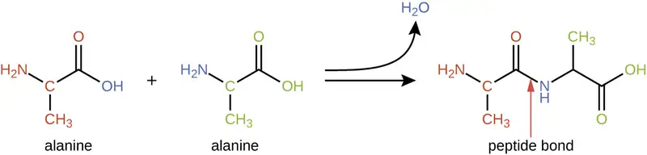
Check Your Understanding
- How many amino acids are in polypeptides?
Protein Structure¶
The size (length) and specific amino acid sequence of a protein are major determinants of its shape, and the shape of a protein is critical to its function. For example, in the process of biological nitrogen fixation (see Biogeochemical Cycles), soil microorganisms collectively known as rhizobia symbiotically interact with roots of legume plants such as soybeans, peanuts, or beans to form a novel structure called a nodule on the plant roots. The plant then produces a carrier protein called leghemoglobin, a protein that carries nitrogen or oxygen. Leghemoglobin binds with a very high affinity to its substrate oxygen at a specific region of the protein where the shape and amino acid sequence are appropriate (the active site). If the shape or chemical environment of the active site is altered, even slightly, the substrate may not be able to bind as strongly, or it may not bind at all. Thus, for the protein to be fully active, it must have the appropriate shape for its function.
Protein structure is categorized in terms of four levels: primary, secondary, tertiary, and quaternary. The primary structure is simply the sequence of amino acids that make up the polypeptide chain. Figure 7.19 depicts the primary structure of a protein.
The chain of amino acids that defines a protein’s primary structure is not rigid, but instead is flexible because of the nature of the bonds that hold the amino acids together. When the chain is sufficiently long, hydrogen bonding may occur between amine and carbonyl functional groups within the peptide backbone (excluding the R side group), resulting in localized folding of the polypeptide chain into helices and sheets. These shapes constitute a protein’s secondary structure. The most common secondary structures are the α-helix and β-pleated sheet. In the α-helix structure, the helix is held by hydrogen bonds between the oxygen atom in a carbonyl group of one amino acid and the hydrogen atom of the amino group that is just four amino acid units farther along the chain. In the β-pleated sheet, the pleats are formed by similar hydrogen bonds between continuous sequences of carbonyl and amino groups that are further separated on the backbone of the polypeptide chain (Figure 7.20).
The next level of protein organization is the tertiary structure, which is the large-scale three-dimensional shape of a single polypeptide chain. Tertiary structure is determined by interactions between amino acid residues that are far apart in the chain. A variety of interactions give rise to protein tertiary structure, such as disulfide bridges, which are bonds between the sulfhydryl (–SH) functional groups on amino acid side groups; hydrogen bonds; ionic bonds; and hydrophobic interactions between nonpolar side chains. All these interactions, weak and strong, combine to determine the final three-dimensional shape of the protein and its function (Figure 7.21).
The process by which a polypeptide chain assumes a large-scale, three-dimensional shape is called protein folding. Folded proteins that are fully functional in their normal biological role are said to possess a native structure. When a protein loses its three-dimensional shape, it may no longer be functional. These unfolded proteins are denatured. Denaturation implies the loss of the secondary structure and tertiary structure (and, if present, the quaternary structure) without the loss of the primary structure.
Some proteins are assemblies of several separate polypeptides, also known as protein subunits. These proteins function adequately only when all subunits are present and appropriately configured. The interactions that hold these subunits together constitute the quaternary structure of the protein. The overall quaternary structure is stabilized by relatively weak interactions. Hemoglobin, for example, has a quaternary structure of four globular protein subunits: two α and two β polypeptides, each one containing an iron-based heme (Figure 7.22).
Another important class of proteins is the conjugated proteins that have a nonprotein portion. If the conjugated protein has a carbohydrate attached, it is called a glycoprotein. If it has a lipid attached, it is called a lipoprotein. These proteins are important components of membranes. Figure 7.23 summarizes the four levels of protein structure.
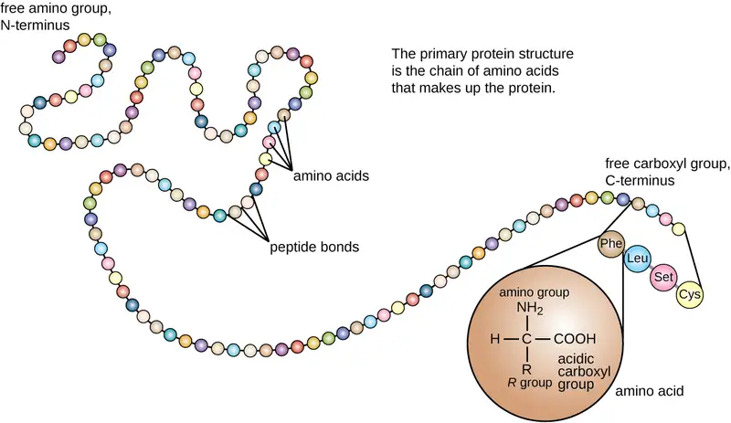
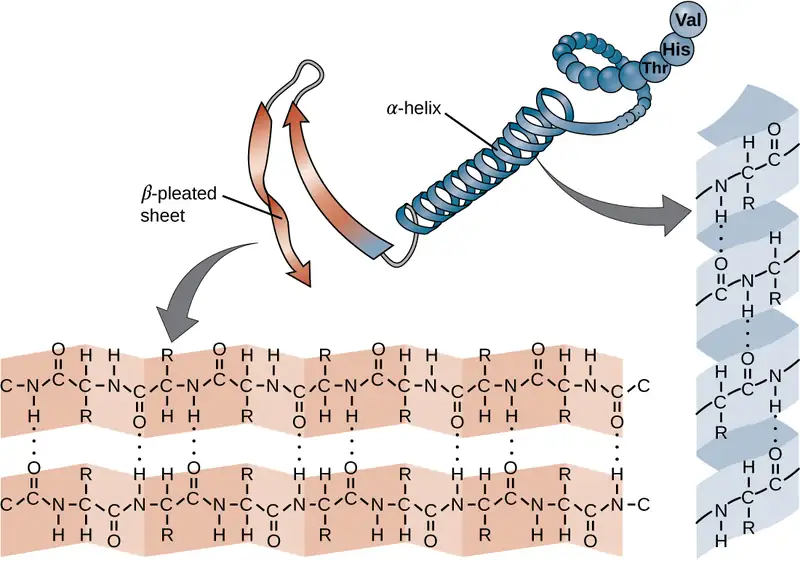
![A long ribbon labeled polypeptide backbone. Loops of the ribbon are held in place by various types of chemical reactions. An ionic bond is then a positively charged amino acid and a negatively charged amino acid are attracted to each other. Hydrophobic interactions are when hydrophobic amino acids (containing only carbons and hydrogens) are clustered together. A disulfide linkage is when a sulfur of one amino acid is covalently bound to the sulfur of another amino acid. A hydrogen bond is when two polar amino acids are attracted to each other.](img/osc-microbio-07-04-tertiary.webp)
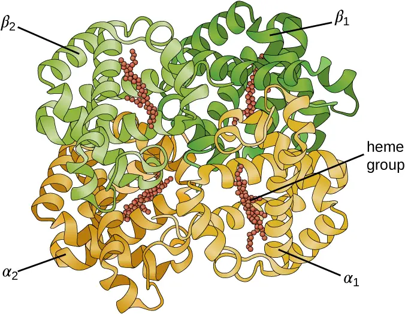
![Primary protein structure: sequence of a chain of amino acids. This is shown as a chain of circles. Secondary protein structure: local folding of the polypeptide chain into helices or sheets. This is shown as a spiral labeled alpha-helix and a folded sheet labeled beta-pleated sheet. Tertiary protein structure: three-dimensional folding pattern of a protein due to side chain interactions. This is shown as a complex 3-D shape made of alpha helices and beta pleated sheets. Quaternary protein structure: protein consisting of more than one amino acid chain. This is shown as 2 complex structures similar to that seen at the tertiary level.](img/osc-microbio-07-04-proteinstr.webp)
Check Your Understanding
- What can happen if a protein’s primary, secondary, tertiary, or quaternary structure is changed?
Micro Connections: Primary Structure, Dysfunctional Proteins, and Cystic Fibrosis
Proteins associated with biological membranes are classified as extrinsic or intrinsic. Extrinsic proteins, also called peripheral proteins, are loosely associated with one side of the membrane. Intrinsic proteins, or integral proteins, are embedded in the membrane and often function as part of transport systems as transmembrane proteins. Cystic fibrosis (CF) is a human genetic disorder caused by a change in the transmembrane protein. It affects mostly the lungs but may also affect the pancreas, liver, kidneys, and intestine. CF is caused by a loss of the amino acid phenylalanine in a cystic fibrosis transmembrane protein (CFTR). The loss of one amino acid changes the primary structure of a protein that normally helps transport salt and water in and out of cells (Figure 7.24).
The change in the primary structure prevents the protein from functioning properly, which causes the body to produce unusually thick mucus that clogs the lungs and leads to the accumulation of sticky mucus. The mucus obstructs the pancreas and stops natural enzymes from helping the body break down food and absorb vital nutrients.
In the lungs of individuals with cystic fibrosis, the altered mucus provides an environment where bacteria can thrive. This colonization leads to the formation of biofilms in the small airways of the lungs. The most common pathogens found in the lungs of patients with cystic fibrosis are Pseudomonas aeruginosa (Figure 7.25) and Burkholderia cepacia. Pseudomonas differentiates within the biofilm in the lung and forms large colonies, called “mucoid” Pseudomonas. The colonies have a unique pigmentation that shows up in laboratory tests (Figure 7.25) and provides physicians with the first clue that the patient has CF (such colonies are rare in healthy individuals).
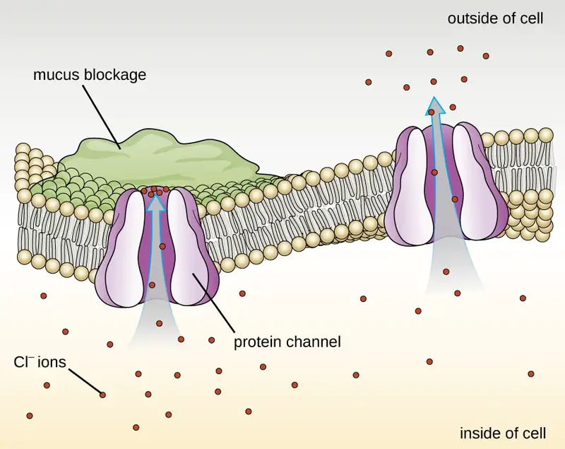
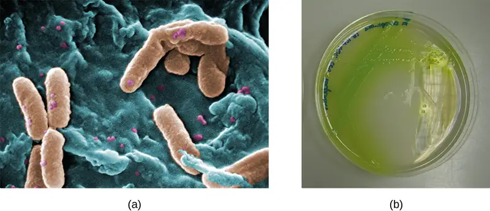
Link to Learning
For more information about cystic fibrosis, visit the Cystic Fibrosis Foundation website.
7.5 Using Biochemistry to Identify Microorganisms¶
Learning Objectives
By the end of this section, you will be able to:
- Describe examples of biosynthesis products within a cell that can be detected to identify bacteria
Accurate identification of bacterial isolates is essential in a clinical microbiology laboratory because the results often inform decisions about treatment that directly affect patient outcomes. For example, cases of food poisoning require accurate identification of the causative agent so that physicians can prescribe appropriate treatment. Likewise, it is important to accurately identify the causative pathogen during an outbreak of disease so that appropriate strategies can be employed to contain the epidemic.
There are many ways to detect, characterize, and identify microorganisms. Some methods rely on phenotypic biochemical characteristics, while others use genotypic identification. The biochemical characteristics of a bacterium provide many traits that are useful for classification and identification. Analyzing the nutritional and metabolic capabilities of the bacterial isolate is a common approach for determining the genus and the species of the bacterium. Some of the most important metabolic pathways that bacteria use to survive will be discussed in Microbial Metabolism. In this section, we will discuss a few methods that use biochemical characteristics to identify microorganisms.
Some microorganisms store certain compounds as granules within their cytoplasm, and the contents of these granules can be used for identification purposes. For example, poly-β-hydroxybutyrate (PHB) is a carbon- and energy-storage compound found in some nonfluorescent bacteria of the genus Pseudomonas. Different species within this genus can be classified by the presence or the absence of PHB and fluorescent pigments. The human pathogen P. aeruginosa and the plant pathogen P. syringae are two examples of fluorescent Pseudomonas species that do not accumulate PHB granules.
Other systems rely on biochemical characteristics to identify microorganisms by their biochemical reactions, such as carbon utilization and other metabolic tests. In small laboratory settings or in teaching laboratories, those assays are carried out using a limited number of test tubes. However, more modern systems, such as the one developed by Biolog, Inc., are based on panels of biochemical reactions performed simultaneously and analyzed by software. Biolog’s system identifies cells based on their ability to metabolize certain biochemicals and on their physiological properties, including pH and chemical sensitivity. It uses all major classes of biochemicals in its analysis. Identifications can be performed manually or with the semi- or fully automated instruments.
Another automated system identifies microorganisms by determining the specimen’s mass spectrum and then comparing it to a database that contains known mass spectra for thousands of microorganisms. This method is based on matrix-assisted laser desorption/ionization time-of-flight mass spectrometry (MALDI-TOF) and uses disposable MALDI plates on which the microorganism is mixed with a specialized matrix reagent (Figure 7.26). The sample/reagent mixture is irradiated with a high-intensity pulsed ultraviolet laser, resulting in the ejection of gaseous ions generated from the various chemical constituents of the microorganism. These gaseous ions are collected and accelerated through the mass spectrometer, with ions traveling at a velocity determined by their mass-to-charge ratio (m/z), thus, reaching the detector at different times. A plot of detector signal versus m/z yields a mass spectrum for the organism that is uniquely related to its biochemical composition. Comparison of the mass spectrum to a library of reference spectra obtained from identical analyses of known microorganisms permits identification of the unknown microbe.
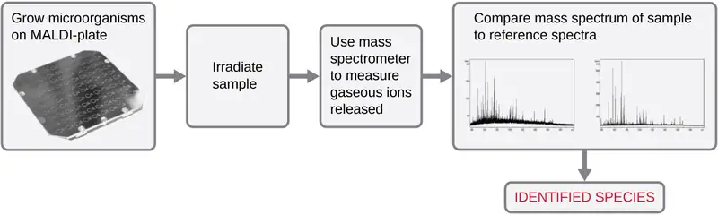
Microbes can also be identified by measuring their unique lipid profiles. As we have learned, fatty acids of lipids can vary in chain length, presence or absence of double bonds, and number of double bonds, hydroxyl groups, branches, and rings. To identify a microbe by its lipid composition, the fatty acids present in their membranes are analyzed. A common biochemical analysis used for this purpose is a technique used in clinical, public health, and food laboratories. It relies on detecting unique differences in fatty acids and is called fatty acid methyl ester (FAME) analysis. In a FAME analysis, fatty acids are extracted from the membranes of microorganisms, chemically altered to form volatile methyl esters, and analyzed by gas chromatography (GC). The resulting GC chromatogram is compared with reference chromatograms in a database containing data for thousands of bacterial isolates to identify the unknown microorganism (Figure 7.27).
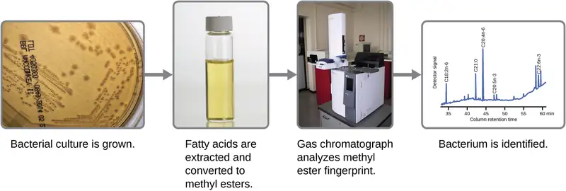
A related method for microorganism identification is called phospholipid-derived fatty acids (PLFA) analysis. Membranes are mostly composed of phospholipids, which can be saponified (hydrolyzed with alkali) to release the fatty acids. The resulting fatty acid mixture is then subjected to FAME analysis, and the measured lipid profiles can be compared with those of known microorganisms to identify the unknown microorganism.
Bacterial identification can also be based on the proteins produced under specific growth conditions within the human body. These types of identification procedures are called proteomic analysis. To perform proteomic analysis, proteins from the pathogen are first separated by high-pressure liquid chromatography (HPLC), and the collected fractions are then digested to yield smaller peptide fragments. These peptides are identified by mass spectrometry and compared with those of known microorganisms to identify the unknown microorganism in the original specimen.
Microorganisms can also be identified by the carbohydrates attached to proteins (glycoproteins) in the plasma membrane or cell wall. Antibodies and other carbohydrate-binding proteins can attach to specific carbohydrates on cell surfaces, causing the cells to clump together. Serological tests (e.g., the Lancefield groups tests, which are used for identification of Streptococcus species) are performed to detect the unique carbohydrates located on the surface of the cell.
Clinical Focus: Resolution
Penny stopped using her new sunscreen and applied the corticosteroid cream to her rash as directed. However, after several days, her rash had not improved and actually seemed to be getting worse. She made a follow-up appointment with her doctor, who observed a bumpy red rash and pus-filled blisters around hair follicles (Figure 7.28). The rash was especially concentrated in areas that would have been covered by a swimsuit. After some questioning, Penny told the physician that she had recently attended a pool party and spent some time in a hot tub. In light of this new information, the doctor suspected a case of hot tub rash, an infection frequently caused by the bacterium Pseudomonas aeruginosa, an opportunistic pathogen that can thrive in hot tubs and swimming pools, especially when the water is not sufficiently chlorinated. P. aeruginosa is the same bacterium that is associated with infections in the lungs of patients with cystic fibrosis.
The doctor collected a specimen from Penny’s rash to be sent to the clinical microbiology lab. Confirmatory tests were carried out to distinguish P. aeruginosa from enteric pathogens that can also be present in pool and hot-tub water. The test included the production of the blue-green pigment pyocyanin on cetrimide agar and growth at 42 °C. Cetrimide is a selective agent that inhibits the growth of other species of microbial flora and also enhances the production of P. aeruginosa pigments pyocyanin and fluorescein, which are a characteristic blue-green and yellow-green, respectively.
Tests confirmed the presence of P. aeruginosa in Penny’s skin sample, but the doctor decided not to prescribe an antibiotic. Even though P. aeruginosa is a bacterium, Pseudomonas species are generally resistant to many antibiotics. Luckily, skin infections like Penny’s are usually self-limiting; the rash typically lasts about 2 weeks and resolves on its own, with or without medical treatment. The doctor advised Penny to wait it out and keep using the corticosteroid cream. The cream will not kill the P. aeruginosa on Penny’s skin, but it should calm her rash and minimize the itching by suppressing her body’s inflammatory response to the bacteria.
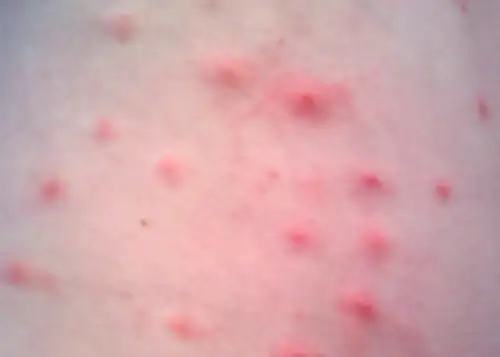
Go back to the previous Clinical Focus box.
Chapter Review¶
Key Concepts and Summary¶
7.1 Organic Molecules¶
- The most abundant elements in cells are hydrogen, carbon, oxygen, nitrogen, phosphorus, and sulfur.
- Life is carbon based. Each carbon atom can bind to another one producing a carbon skeleton that can be straight, branched, or ring shaped.
- The same numbers and types of atoms may bond together in different ways to yield different molecules called isomers. Isomers may differ in the bonding sequence of their atoms (structural isomers) or in the spatial arrangement of atoms whose bonding sequences are the same (stereoisomers), and their physical and chemical properties may vary slightly or drastically.
- Functional groups confer specific chemical properties to molecules bearing them. Common functional groups in biomolecules are hydroxyl, methyl, carbonyl, carboxyl, amino, phosphate, and sulfhydryl.
- Macromolecules are polymers assembled from individual units, the monomers, which bind together like building blocks. Many biologically significant macromolecules are formed by dehydration synthesis, a process in which monomers bind together by combining their functional groups and generating water molecules as byproducts.
7.2 Carbohydrates¶
- Carbohydrates, the most abundant biomolecules on earth, are widely used by organisms for structural and energy-storage purposes.
- Carbohydrates include individual sugar molecules (monosaccharides) as well as two or more molecules chemically linked by glycosidic bonds. Monosaccharides are classified based on the number of carbons the molecule as trioses (3 C), tetroses (4 C), pentoses (5 C), and hexoses (6 C). They are the building blocks for the synthesis of polymers or complex carbohydrates.
- Disaccharides such as sucrose, lactose, and maltose are molecules composed of two monosaccharides linked together by a glycosidic bond.
- Polysaccharides, or glycans, are polymers composed of hundreds of monosaccharide monomers linked together by glycosidic bonds. The energy-storage polymers starch and glycogen are examples of polysaccharides and are all composed of branched chains of glucose molecules.
- The polysaccharide cellulose is a common structural component of the cell walls of organisms. Other structural polysaccharides, such as N-acetyl glucosamine (NAG) and N-acetyl muramic acid (NAM), incorporate modified glucose molecules and are used in the construction of peptidoglycan or chitin.
7.3 Lipids¶
- Lipids are composed mainly of carbon and hydrogen, but they can also contain oxygen, nitrogen, sulfur, and phosphorous. They provide nutrients for organisms, store carbon and energy, play structural roles in membranes, and function as hormones, pharmaceuticals, fragrances, and pigments.
- Fatty acids are long-chain hydrocarbons with a carboxylic acid functional group. Their relatively long nonpolar hydrocarbon chains make them hydrophobic. Fatty acids with no double bonds are saturated; those with double bonds are unsaturated.
- Fatty acids chemically bond to glycerol to form structurally essential lipids such as triglycerides and phospholipids. Triglycerides comprise three fatty acids bonded to glycerol, yielding a hydrophobic molecule. Phospholipids contain both hydrophobic hydrocarbon chains and polar head groups, making them amphipathic and capable of forming uniquely functional large scale structures.
- Biological membranes are large-scale structures based on phospholipid bilayers that provide hydrophilic exterior and interior surfaces suitable for aqueous environments, separated by an intervening hydrophobic layer. These bilayers are the structural basis for cell membranes in most organisms, as well as subcellular components such as vesicles.
- Isoprenoids are lipids derived from isoprene molecules that have many physiological roles and a variety of commercial applications.
- A wax is a long-chain isoprenoid that is typically water resistant; an example of a wax-containing substance is sebum, produced by sebaceous glands in the skin. Steroids are lipids with complex, ringed structures that function as structural components of cell membranes and as hormones. Sterols are a subclass of steroids containing a hydroxyl group at a specific location on one of the molecule’s rings; one example is cholesterol.
- Bacteria produce hopanoids, structurally similar to cholesterol, to strengthen bacterial membranes. Fungi and protozoa produce a strengthening agent called ergosterol.
7.4 Proteins¶
- Amino acids are small molecules essential to all life. Each has an α carbon to which a hydrogen atom, carboxyl group, and amine group are bonded. The fourth bonded group, represented by R, varies in chemical composition, size, polarity, and charge among different amino acids, providing variation in properties.
- Peptides are polymers formed by the linkage of amino acids via dehydration synthesis. The bonds between the linked amino acids are called peptide bonds. The number of amino acids linked together may vary from a few to many.
- Proteins are polymers formed by the linkage of a very large number of amino acids. They perform many important functions in a cell, serving as nutrients and enzymes; storage molecules for carbon, nitrogen, and energy; and structural components.
- The structure of a protein is a critical determinant of its function and is described by a graduated classification: primary, secondary, tertiary, and quaternary. The native structure of a protein may be disrupted by denaturation, resulting in loss of its higher-order structure and its biological function.
- Some proteins are formed by several separate protein subunits, the interaction of these subunits composing the quaternary structure of the protein complex.
- Conjugated proteins have a nonpolypeptide portion that can be a carbohydrate (forming a glycoprotein) or a lipid fraction (forming a lipoprotein). These proteins are important components of membranes.
7.5 Using Biochemistry to Identify Microorganisms¶
- Accurate identification of bacteria is essential in a clinical laboratory for diagnostic and management of epidemics, pandemics, and food poisoning caused by bacterial outbreaks.
- The phenotypic identification of microorganisms involves using observable traits, including profiles of structural components such as lipids, biosynthetic products such as sugars or amino acids, or storage compounds such as poly-β-hydroxybutyrate.
- An unknown microbe may be identified from the unique mass spectrum produced when it is analyzed by matrix assisted laser desorption/ionization time of flight mass spectrometry (MALDI-TOF).
- Microbes can be identified by determining their lipid compositions, using fatty acid methyl esters (FAME) or phospholipid-derived fatty acids (PLFA) analysis.
- Proteomic analysis, the study of all accumulated proteins of an organism; can also be used for bacterial identification.
- Glycoproteins in the plasma membrane or cell wall structures can bind to lectins or antibodies and can be used for identification.
Multiple Choice¶
7.1 Organic Molecules¶
1. Which of these elements is not a micronutrient?
- C
- Ca
- Co
- Cu
Answer
A
2. Which of the following is the name for molecules whose structures are nonsuperimposable mirror images?
- structural isomers
- monomers
- polymers
- enantiomers
Answer
D
7.2 Carbohydrates¶
3. By definition, carbohydrates contain which elements?
- carbon and hydrogen
- carbon, hydrogen, and nitrogen
- carbon, hydrogen, and oxygen
- carbon and oxygen
Answer
C
4. Monosaccharides may link together to form polysaccharides by forming which type of bond?
- hydrogen
- peptide
- ionic
- glycosidic
Answer
D
7.3 Lipids¶
5. Which of the following describes lipids?
- a source of nutrients for organisms
- energy-storage molecules
- molecules having structural role in membranes
- molecules that are part of hormones and pigments
- all of the above
Answer
E
6. Molecules bearing both polar and nonpolar groups are said to be which of the following?
- hydrophilic
- amphipathic
- hydrophobic
- polyfunctional
Answer
B
7.4 Proteins¶
7. Which of the following groups varies among different amino acids?
- hydrogen atom
- carboxyl group
- R group
- amino group
Answer
C
8. The amino acids present in proteins differ in which of the following?
- size
- shape
- side groups
- all of the above
Answer
D
9. Which of the following bonds are not involved in tertiary structure?
- peptide bonds
- ionic bonds
- hydrophobic interactions
- hydrogen bonds
Answer
A
7.5 Using Biochemistry to Identify Microorganisms¶
10. Which of the following characteristics/compounds is not considered to be a phenotypic biochemical characteristic used of microbial identification?
- poly-β-hydroxybutyrate
- small-subunit (16S) rRNA gene
- carbon utilization
- lipid composition
Answer
B
11. Proteomic analysis is a methodology that deals with which of the following?
- the analysis of proteins functioning as enzymes within the cell
- analysis of transport proteins in the cell
- the analysis of integral proteins of the cell membrane
- the study of all accumulated proteins of an organism
Answer
D
12. Which method involves the generation of gas phase ions from intact microorganisms?
- FAME
- PLFA
- MALDI-TOF
- Lancefield group testing
Answer
C
13. Which method involves the analysis of membrane-bound carbohydrates?
- FAME
- PLFA
- MALDI-TOF
- Lancefield group testing
Answer
D
14. Which method involves conversion of a microbe’s lipids to volatile compounds for analysis by gas chromatography?
- FAME
- proteomic analysis
- MALDI-TOF
- Lancefield group testing
Answer
A
True/False¶
7.1 Organic Molecules¶
15. Aldehydes, amides, carboxylic acids, esters, and ketones all contain carbonyl groups.
Answer
True
16. Two molecules containing the same types and numbers of atoms but different bonding sequences are called enantiomers.
Answer
False
7.3 Lipids¶
17. Lipids are a naturally occurring group of substances that are not soluble in water but are freely soluble in organic solvents.
Answer
True
18. Fatty acids having no double bonds are called “unsaturated.”
Answer
False
19. A triglyceride is formed by joining three glycerol molecules to a fatty acid backbone in a dehydration reaction.
Answer
False
7.4 Proteins¶
20. A change in one amino acid in a protein sequence always results in a loss of function.
Answer
False
7.5 Using Biochemistry to Identify Microorganisms¶
21. MALDI-TOF relies on obtaining a unique mass spectrum for the bacteria tested and then checking the acquired mass spectrum against the spectrum databases registered in the analysis software to identify the microorganism.
Answer
True
22. Lancefield group tests can identify microbes using antibodies that specifically bind cell-surface proteins.
Answer
False
Short Answer¶
7.1 Organic Molecules¶
23. Why are carbon, nitrogen, oxygen, and hydrogen the most abundant elements in living matter and, therefore, considered macronutrients?
24. Identify the functional group in each of the depicted structural formulas.
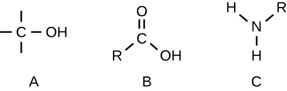
7.2 Carbohydrates¶
25. What are monosaccharides, disaccharides, and polysaccharides?
7.3 Lipids¶
26. Describe the structure of a typical phospholipid. Are these molecules polar or nonpolar?
7.5 Using Biochemistry to Identify Microorganisms¶
27. Compare MALDI-TOF, FAME, and PLFA, and explain how each technique would be used to identify pathogens.
Critical Thinking¶
7.1 Organic Molecules¶
28. The structural formula shown corresponds to penicillin G, a narrow-spectrum antibiotic that is given intravenously or intramuscularly as a treatment for several bacterial diseases. The antibiotic is produced by fungi of the genus Penicillium. (a) Identify three major functional groups in this molecule that each comprise two simpler functional groups. (b) Name the two simpler functional groups composing each of the major functional groups identified in (a).
![A complex chemical figure begins with a ring of Cs; each C is double bonded to one other C. Off this ring is a CH2, then a C with a double bonded O, then an NH, then a C in a square. This square has Cs in 3 corners and an N in the fourth. The top left C is attached to the previous components discussed here, the bottom left C is double bonded to an O. The top right C is bound to an S, which is bound to a C, which is bound to a CH, which is bound to the N in the square. Back to the C that is attached to the S – this C is bound to two CH3s. The C attached to the N is bound to a C that is double bonded to an O and bound to an OH.](img/osc-microbio-07-01-fungroup-img.webp)
7.2 Carbohydrates¶
29. The figure depicts the structural formulas of glucose, galactose, and fructose. (a) Circle the functional groups that classify the sugars either an aldose or a ketose, and identify each sugar as one or the other. (b) The chemical formula of these compounds is the same, although the structural formula is different. What are such compounds called?
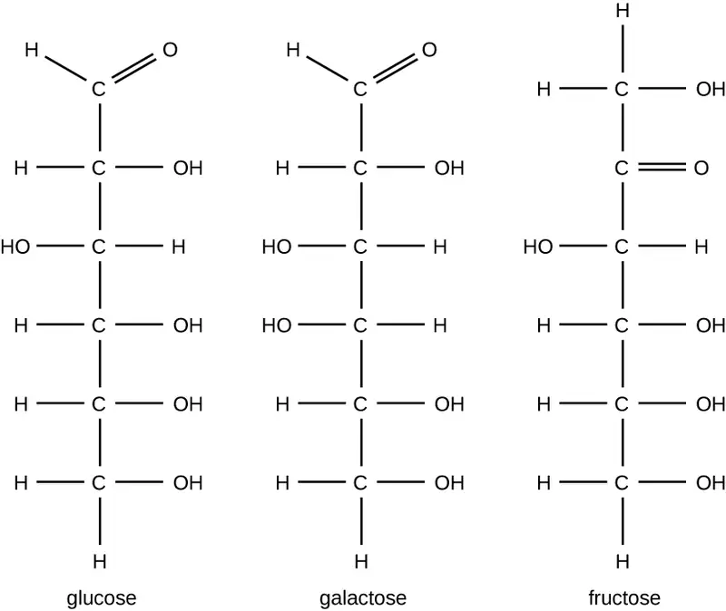
30. Structural diagrams for the linear and cyclic forms of a monosaccharide are shown. (a) What is the molecular formula for this monosaccharide? (Count the C, H and O atoms in each to confirm that these two molecules have the same formula, and report this formula.) (b) Identify which hydroxyl group in the linear structure undergoes the ring-forming reaction with the carbonyl group.
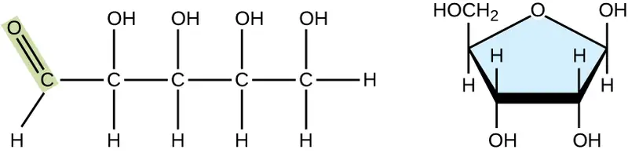
31. The term “dextrose” is commonly used in medical settings when referring to the biologically relevant isomer of the monosaccharide glucose. Explain the logic of this alternative name.
7.3 Lipids¶
32. Microorganisms can thrive under many different conditions, including high-temperature environments such as hot springs. To function properly, cell membranes have to be in a fluid state. How do you expect the fatty acid content (saturated versus unsaturated) of bacteria living in high-temperature environments might compare with that of bacteria living in more moderate temperatures?
7.4 Proteins¶
33. Heating a protein sufficiently may cause it to denature. Considering the definition of denaturation, what does this statement say about the strengths of peptide bonds in comparison to hydrogen bonds?
34. The image shown represents a tetrapeptide. (a) How many peptide bonds are in this molecule? (b) Identify the side groups of the four amino acids composing this peptide.
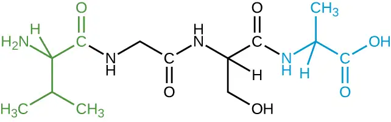
Matching¶
35. Match each polysaccharide with its description.
| ___chitin | A. energy storage polymer in plants |
| ___glycogen | B. structural polymer found in plants |
| ___starch | C. structural polymer found in cell walls of fungi and exoskeletons of some animals |
| ___cellulose | D. energy storage polymer found in animal cells and bacteria |
Answer
C, D, A, B
Fill in the Blank¶
7.3 Lipids¶
36. Waxes contain esters formed from long-chain __________ and saturated __________, and they may also contain substituted hydrocarbons.
Answer
alcohols; fatty acids
37. Cholesterol is the most common member of the __________ group, found in animal tissues; it has a tetracyclic carbon ring system with a __________ bond in one of the rings and one free __________group.
Answer
steroid; double; hydroxyl
7.4 Proteins¶
38. The sequence of amino acids in a protein is called its __________.
Answer
Primary structure
39. Denaturation implies the loss of the __________ and __________ structures without the loss of the __________ structure.
Answer
secondary, tertiary, primary
7.5 Using Biochemistry to Identify Microorganisms¶
40. A FAME analysis involves the conversion of _______ to more volatile _____ for analysis using ____________.
Answer
fatty acids, methyl esters, gas chromatography
Adapted from Microbiology by OpenStax, licensed under CC BY 4.0. Access the original for free at openstax.org. Changes: converted to the web reading format of The Open Book Project.